Where wework
We design and sign projects anywhere in Costa Rica. Each page gathers what matters before building in that place: the rain, the sun, the wind, the permits and the drive from the airport.
(Architects in Costa Rica)
Studio CAVA
Architecture and interior design for houses, villas and boutique hotels across Costa Rica: the study of the lot before you buy, the design, the permits and the works.
(Guanacaste)
-
 2 of our projects
Tamarindo
Santa Cruz
1,741 mm of rain a year
2 of our projects
Tamarindo
Santa Cruz
1,741 mm of rain a year
Dry Dec to Apr 1 h 25 min from Liberia airport -
 3 of our projects
Playa Grande
Santa Cruz
1,726 mm of rain a year
3 of our projects
Playa Grande
Santa Cruz
1,726 mm of rain a year
Dry Dec to Apr 1 h 20 min from Liberia airport -
 2 of our projects
Playa Negra
Santa Cruz
1,792 mm of rain a year
2 of our projects
Playa Negra
Santa Cruz
1,792 mm of rain a year
Dry Dec to Apr 1 h 35 min from Liberia airport -
 3 of our projects
Flamingo
Santa Cruz
1,755 mm of rain a year
3 of our projects
Flamingo
Santa Cruz
1,755 mm of rain a year
Dry Dec to Apr 1 h from Liberia airport -
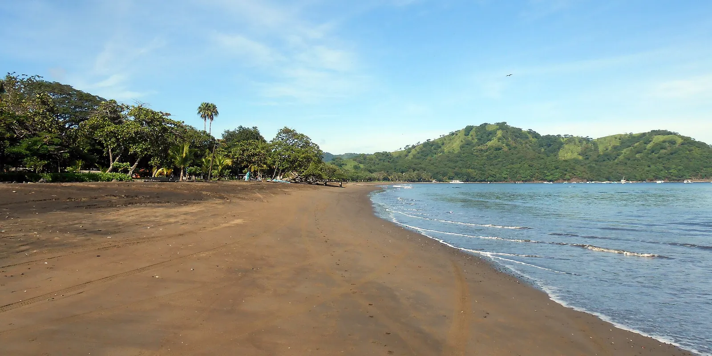
Playas del Coco Carrillo 1,694 mm of rain a year
Dry Dec to Apr 30 min from Liberia airport -
 1 of our projects
Papagayo
Liberia
1,793 mm of rain a year
1 of our projects
Papagayo
Liberia
1,793 mm of rain a year
Dry Dec to Apr 55 min from Liberia airport -
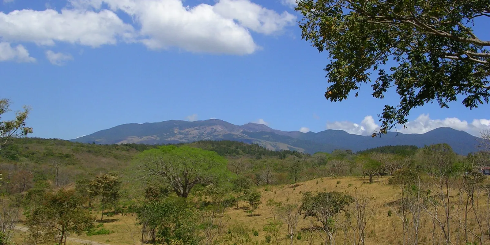
Liberia Liberia 1,779 mm of rain a year
Dry Dec to Apr 15 min from Liberia airport -
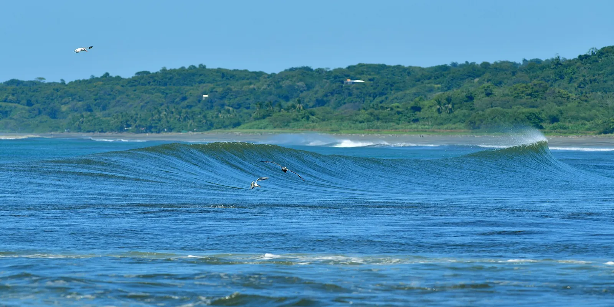
Nosara Nicoya 2,070 mm of rain a year
Dry Dec to Apr 2 h 20 min from Liberia airport -
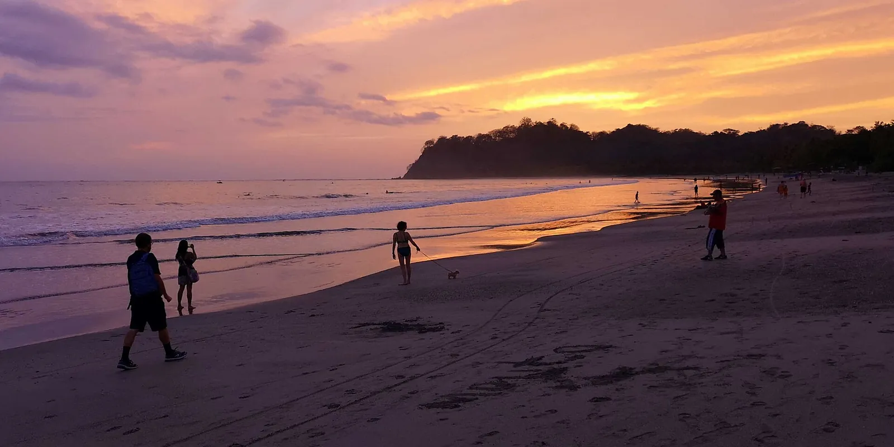
Sámara Nicoya 2,091 mm of rain a year
Dry Dec to Apr 2 h 15 min from Liberia airport -
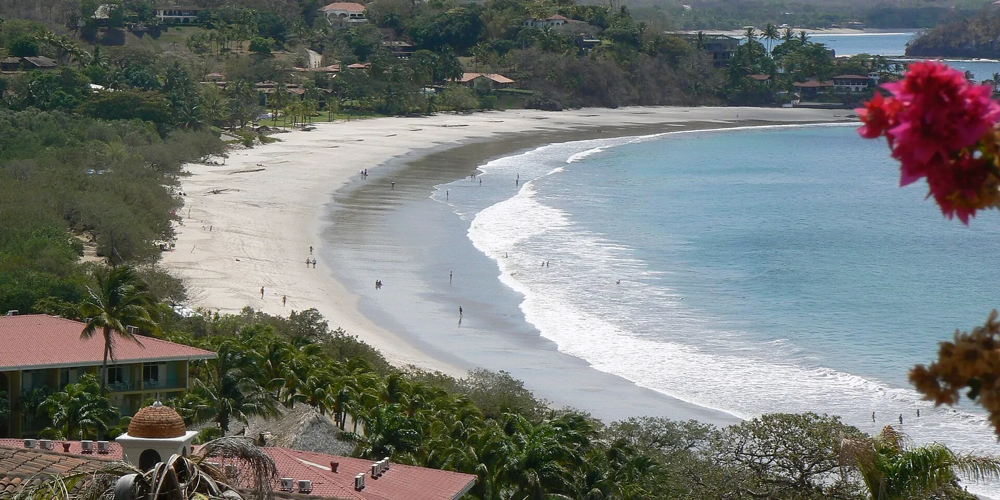
Potrero Santa Cruz 1,746 mm of rain a year
Dry Dec to Apr 50 min from Liberia airport
(Southern Nicoya Peninsula)
(Central Pacific)
(South Pacific)
-
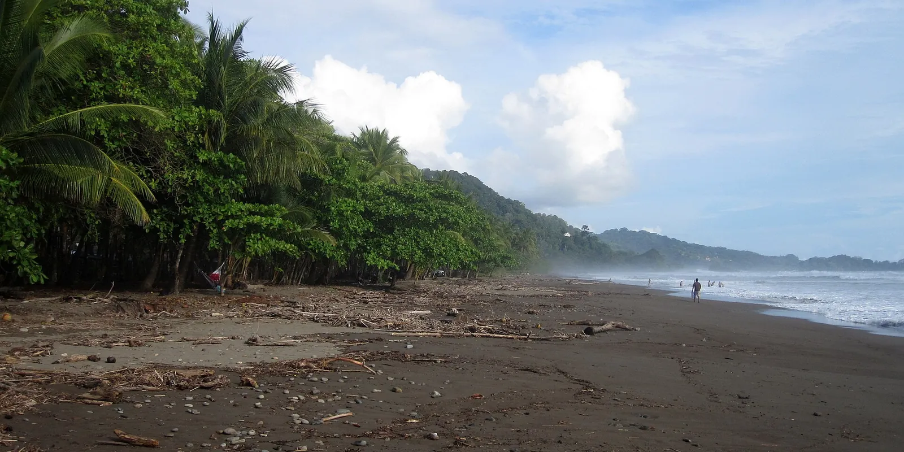
Dominical Osa 3,765 mm of rain a year
Dry Jan to Mar 3 h 40 min from San José airport -
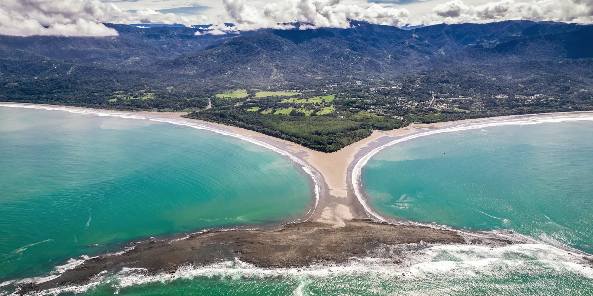
Uvita Osa 2,751 mm of rain a year
Dry Jan to Mar 4 h from San José airport -
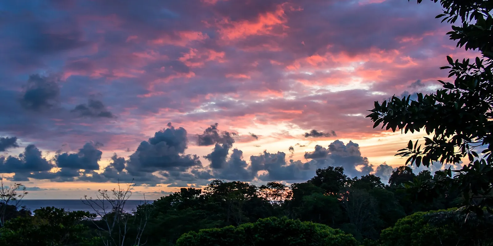
Ojochal Osa 2,576 mm of rain a year
Dry Jan to Mar 4 h 15 min from San José airport -
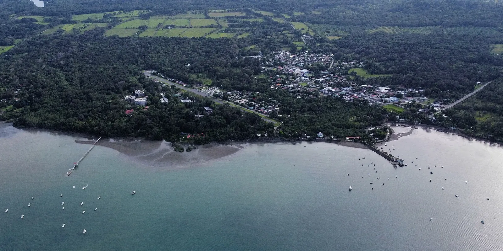
Puerto Jiménez Puerto Jiménez 4,041 mm of rain a year
Rain in every month 6 h 15 min from San José airport
(Caribbean)
(Central Valley)
-
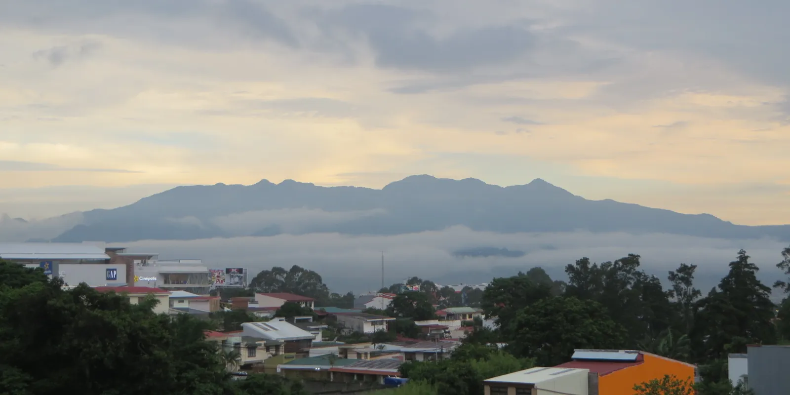
Escazú Escazú 1,994 mm of rain a year
Dry Dec to Mar 25 min from San José airport -
 1 of our projects
Santa Ana
Santa Ana
2,142 mm of rain a year
1 of our projects
Santa Ana
Santa Ana
2,142 mm of rain a year
Dry Dec to Mar 25 min from San José airport -
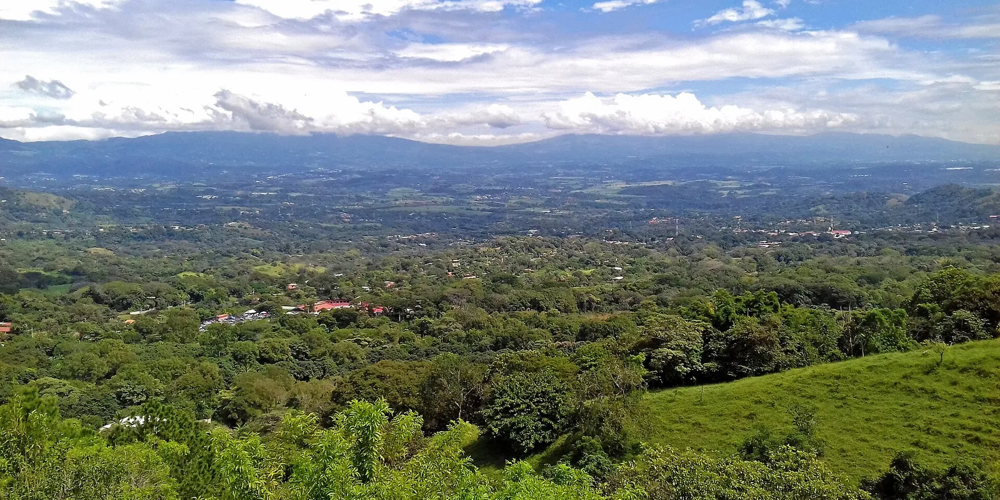
Atenas Atenas 2,307 mm of rain a year
Dry Dec to Mar 35 min from San José airport -
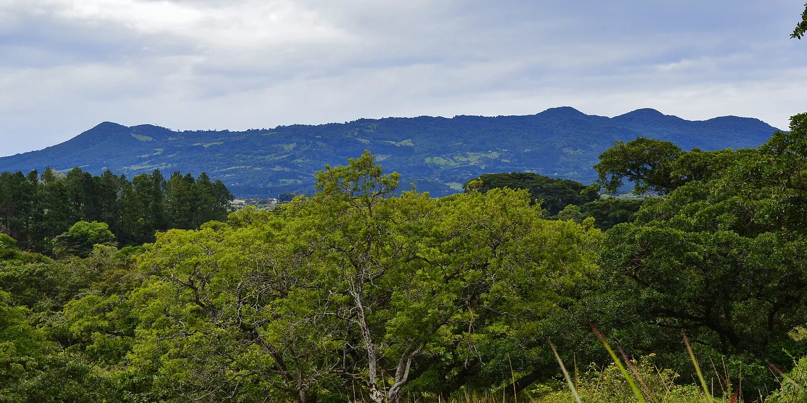
Heredia Heredia 2,384 mm of rain a year
Dry Feb to Mar 20 min from San José airport -
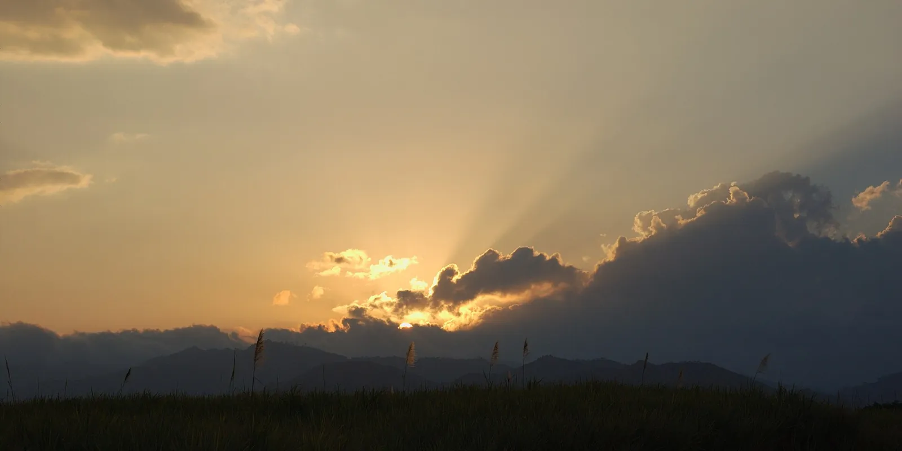
Grecia Grecia 2,205 mm of rain a year
Dry Dec to Mar 40 min from San José airport -
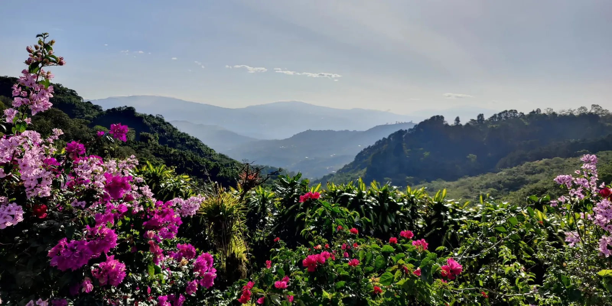
San Ramón San Ramón 1,939 mm of rain a year
Dry Dec to Apr 50 min from San José airport
(Monteverde and Arenal)
Compare the 27 towns: rain, dry season, heat, sunlight and the airports
| Town | Canton | Rain a year | Dry season | Hottest afternoons | Sunlight a year | From Liberia airport | From San José airport |
|---|---|---|---|---|---|---|---|
| Guanacaste | |||||||
| Tamarindo | Santa Cruz | 1,741 mm | December to April | 35 °C, April | 2,080 kWh/m² | 1 h 25 min | 4 h 55 min |
| Playa Grande | Santa Cruz | 1,726 mm | December to April | 34 °C, April | 2,089 kWh/m² | 1 h 20 min | 5 h 5 min |
| Playa Negra | Santa Cruz | 1,792 mm | December to April | 35 °C, April | 2,080 kWh/m² | 1 h 35 min | 4 h 55 min |
| Flamingo | Santa Cruz | 1,755 mm | December to April | 34 °C, April | 2,081 kWh/m² | 1 h | 4 h 50 min |
| Playas del Coco | Carrillo | 1,694 mm | December to April | 34 °C, April | 2,097 kWh/m² | 30 min | 4 h 15 min |
| Papagayo | Liberia | 1,793 mm | December to April | 34 °C, April | 2,097 kWh/m² | 55 min | 4 h 45 min |
| Liberia | Liberia | 1,779 mm | December to April | 33 °C, April | 2,091 kWh/m² | 15 min | 3 h 35 min |
| Nosara | Nicoya | 2,070 mm | December to April | 35 °C, April | 2,004 kWh/m² | 2 h 20 min | 4 h 50 min |
| Sámara | Nicoya | 2,091 mm | December to April | 35 °C, April | 2,082 kWh/m² | 2 h 15 min | 4 h 40 min |
| Potrero | Santa Cruz | 1,746 mm | December to April | 34 °C, April | 2,054 kWh/m² | 50 min | 4 h 35 min |
| Southern Nicoya Peninsula | |||||||
| Santa Teresa | Puntarenas | 2,841 mm | December to March | 30 °C, February | 2,036 kWh/m² | 3 h 25 min | 5 h 25 min |
| Montezuma | Puntarenas | 2,905 mm | December to March | 30 °C, February | 2,000 kWh/m² | 3 h 20 min | 5 h 25 min |
| Central Pacific | |||||||
| Jacó | Garabito | 2,757 mm | January to March | 28 °C, March | 2,011 kWh/m² | 3 h 30 min | 1 h 40 min |
| Manuel Antonio | Quepos | 3,972 mm | February to March | 27 °C, March | 1,958 kWh/m² | 4 h 55 min | 3 h 5 min |
| South Pacific | |||||||
| Dominical | Osa | 3,765 mm | January to March | 29 °C, March | 1,993 kWh/m² | 5 h 35 min | 3 h 40 min |
| Uvita | Osa | 2,751 mm | January to March | 28 °C, March | 1,925 kWh/m² | 5 h 50 min | 4 h |
| Ojochal | Osa | 2,576 mm | January to March | 28 °C, March | 1,914 kWh/m² | 6 h 5 min | 4 h 15 min |
| Puerto Jiménez | Puerto Jiménez | 4,041 mm | None, it rains every month | 29 °C, May | 1,841 kWh/m² | 8 h 5 min | 6 h 15 min |
| Caribbean | |||||||
| Puerto Viejo | Talamanca | 2,940 mm | None, it rains every month | 28 °C, June | 1,781 kWh/m² | 7 h 40 min | 4 h 45 min |
| Central Valley | |||||||
| Escazú | Escazú | 1,994 mm | December to March | 27 °C, April | 1,737 kWh/m² | 3 h 45 min | 25 min |
| Santa Ana | Santa Ana | 2,142 mm | December to March | 28 °C, April | 1,755 kWh/m² | 3 h 40 min | 25 min |
| Atenas | Atenas | 2,307 mm | December to March | 31 °C, April | 2,028 kWh/m² | 3 h 20 min | 35 min |
| Heredia | Heredia | 2,384 mm | February to March | 27 °C, April | 1,988 kWh/m² | 3 h 50 min | 20 min |
| Grecia | Grecia | 2,205 mm | December to March | 29 °C, April | 1,937 kWh/m² | 3 h 35 min | 40 min |
| San Ramón | San Ramón | 1,939 mm | December to April | 29 °C, April | 1,843 kWh/m² | 3 h | 50 min |
| Monteverde and Arenal | |||||||
| Monteverde | Monteverde | 2,719 mm | February to March | 22 °C, March | 1,838 kWh/m² | 2 h 30 min | 2 h 45 min |
| La Fortuna | San Carlos | 3,896 mm | None, it rains every month | 29 °C, March | 1,512 kWh/m² | 2 h 50 min | 2 h 20 min |
Rain: CHIRPS climatology (CHPclim v2, Climate Hazards Center, UC Santa Barbara). Temperature and wind: the nearest of 12 weather stations, typical year 2011 to 2025 (Climate.OneBuilding.org TMYx, from NOAA observations), temperatures adjusted for elevation. Heavy-rain days: NASA POWER (MERRA-2), 2001 to 2020. Sun: calculated for the town's coordinates. Elevation: SRTM. Roads and places: OpenStreetMap. Gathered October 2026. Photos: Playas del Coco, Haakon S. Krohn (CC BY-SA 3.0); Liberia, Kobold66 (CC BY-SA 3.0); Nosara, Panegyrics of Granovetter (CC BY-SA 2.0); Sámara, Julián Monge-Nájera (CC BY-SA 4.0); Santa Teresa, Christopher Crouzet (CC BY-SA 4.0); Jacó, Adu Costa Rica (CC BY-SA 3.0); Dominical, Haakon S. Krohn (CC BY-SA 3.0); Escazú, O'Dea (CC BY-SA 4.0); Atenas, Haakon S. Krohn (CC BY 4.0); Heredia, Victor Quirós A (CC BY-SA 3.0); Ojochal, Los Paseos from Earth (CC BY-SA 2.0); Puerto Jiménez, Durmanb (CC BY-SA 4.0); Monteverde, Dr. Alexey Yakovlev (CC BY-SA 2.0); La Fortuna, BonniesPics (CC BY-SA 3.0); Grecia, Rodtico21 (CC BY-SA 4.0).